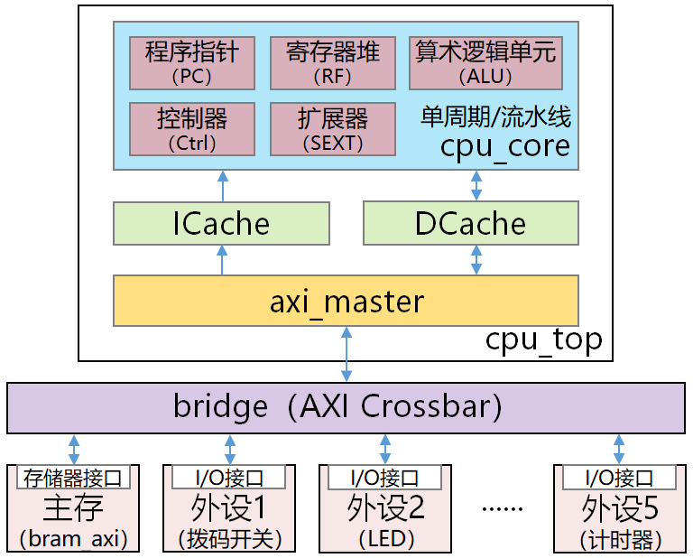
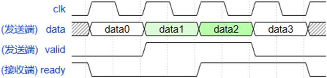
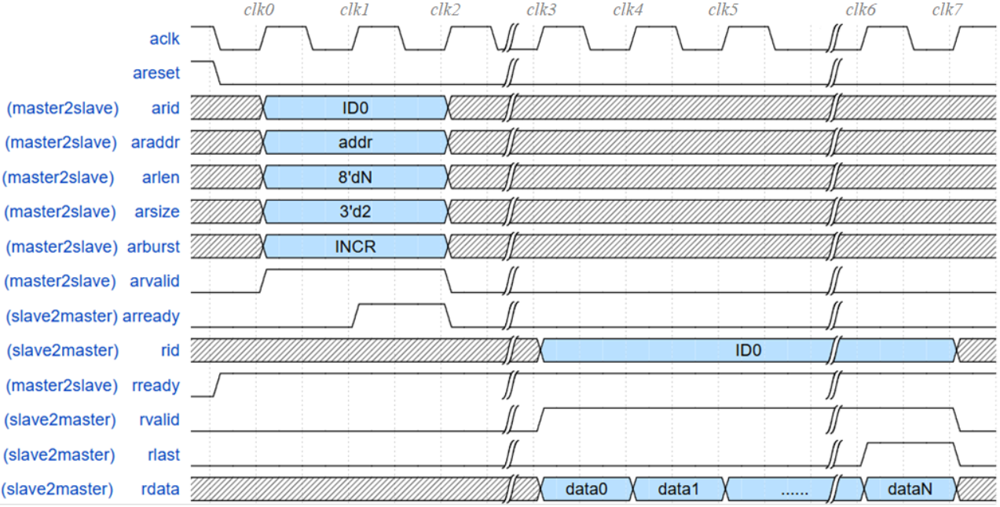
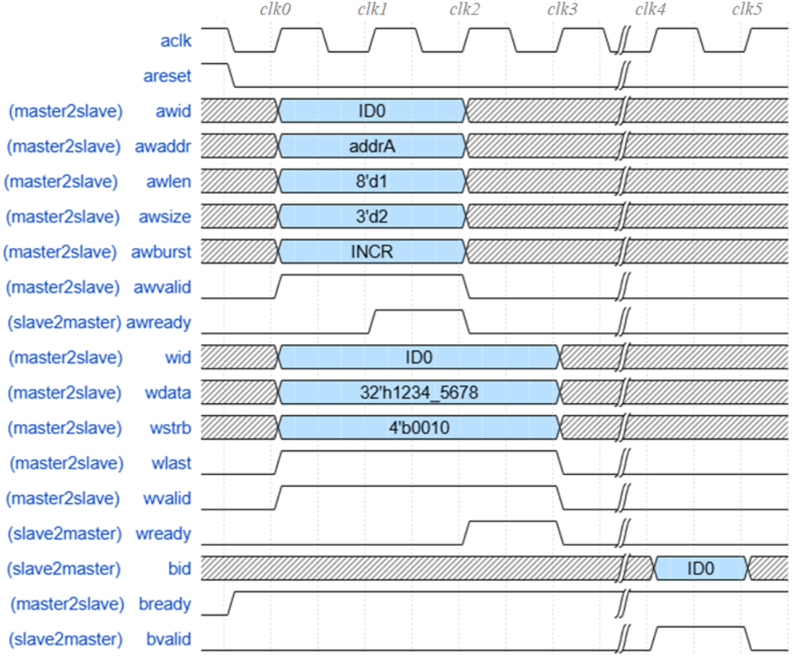

实验原理
1. SoC架构
CPU由数据通路和控制器组成，其主要功能是控制和运算。对CPU进行扩展，增加系统总线、存储器和各种各样的I/O接口电路，形成完整的计算机系统，并将整个系统集成到单芯片上，即为SoC。SoC具有集成度高、功耗低、体积小等优点，在嵌入式系统领域中被广泛应用。
本实验提供的SoC架构如图1-1所示。miniRV或miniLA的处理器核心cpu_core通过其取指接口、数据访问接口与哈佛结构的Cache连接。Cache通过其自身的访存接口与系统总线控制器模块axi_master连接。

总线控制器axi_master接收并解析来自CPU或Cache的访问请求，并将其转换成通用的AXI协议的总线读写请求，然后再将这些请求发送到下游的总线桥模块bridge。总线桥根据请求地址，将总线读写请求发送给相应的从设备（主存或外设I/O接口）。通用的总线协议能够快速实现CPU与存储器、外设的互连通信，节约设计和开发成本。
2. ready-valid握手协议
为确保地址、数据等信息能在发送端、接收端之间准确无误地传输，需要在传输信息时添加握手信号。握手信号之间的约定即为握手协议。
ready-valid协议是最常用的握手协议之一。ready信号表示接收端的就绪状态 —— 当ready信号有效，表示接收端已就绪，可以接收新的信息；否则表示接收端在忙，暂时不能接收信息。valid信号表示发送端的发送状态 —— 当valid信号有效，表示发送端正在发送新的信息，此时信号线上的信息为有效信息；否则表示无信息在发送，此时信号线上的信息是无效信息。
在ready-valid握手协议中，当且仅当ready信号和valid信号均为高电平时，才能在时钟信号上升沿传输数据。ready-valid握手协议的典型时序如图1-2所示。

ready-valid握手协议时序图时序解读 
在图1-2中，data0、data3为无效数据，data1、data2为有效数据，但只有data2被成功发送到接收端。
3. AXI4总线协议
AXI4是ARM提出的基于ready-valid握手协议的高性能嵌入式总线协议。
AXI4总线包含写地址（AW）、写数据（W）、写响应（B）、读地址（AR）和读数据（R）五个通道，各通道相互独立且可并行工作，AXI4也因此具备同时传输写请求和读请求的能力。
AXI4总线的读通道相关信号定义如表1-1所示，写通道相关信号定义如表1-2所示。
| 通道 | 功能 | 信号 | 位宽 | 方向 | 释义 |
|---|---|---|---|---|---|
| 读地址 (AR) |
主设备通过AR通道发送被读数据的地址 | arid | 4 | 主→从 | 发出读请求的主设备ID |
| araddr | 32 | 主→从 | 读地址 | ||
| arlen | 8 | 主→从 | 猝发传输的数据包个数 | ||
| arsize | 3 | 主→从 | 每次传输的数据包大小 | ||
| arburst | 2 | 主→从 | 猝发传输的地址生成方式 | ||
| arvalid | 1 | 主→从 | 读地址的有效信号 | ||
| arready | 1 | 从→主 | 从设备AR通道的就绪信号 | ||
| 读数据 (R) |
从设备通过R通道返回被读取数据 | rid | 4 | 从→主 | 当前读响应对应的主设备ID |
| rready | 1 | 主→从 | 主设备R通道的就绪信号 | ||
| rdata | 32 | 从→主 | 读数据 | ||
| rresp | 2 | 从→主 | 读请求响应（可忽略） | ||
| rlast | 1 | 从→主 | 最后一个读数据的标志位 | ||
| rvalid | 1 | 从→主 | 读数据的有效信号 |
| 通道 | 功能 | 信号 | 位宽 | 方向 | 释义 |
|---|---|---|---|---|---|
| 写地址 (AW) |
主设备通过AW通道发送被写数据的地址 | awid | 4 | 主→从 | 发出写请求的主设备ID |
| awaddr | 32 | 主→从 | 写地址 | ||
| awlen | 8 | 主→从 | 猝发传输的数据包个数 | ||
| awsize | 3 | 主→从 | 每次传输的数据包大小 | ||
| awburst | 2 | 主→从 | 猝发传输的地址生成方式 | ||
| awvalid | 1 | 主→从 | 写地址的有效信号 | ||
| awready | 1 | 从→主 | 从设备AW通道的就绪信号 | ||
| 写数据 (W) |
主设备通过W通道传输待写入到主存或外设的数据 | wid | 4 | 主→从 | 发出写请求的主设备ID |
| wdata | 32 | 主→从 | 写数据 | ||
| wstrb | 4 | 主→从 | 按字节的写使能信号 | ||
| wlast | 1 | 主→从 | 最后一个写数据的标志位 | ||
| wvalid | 1 | 主→从 | 写数据的有效信号 | ||
| wready | 1 | 从→主 | 从设备W通道的就绪信号 | ||
| 写响应 (B) |
从设备通过B通道返回写请求处理完成的响应 | bid | 4 | 从→主 | 当前写响应对应的主设备ID |
| bready | 1 | 主→从 | 主设备B通道的就绪信号 | ||
| bresp | 2 | 从→主 | 写请求响应（可忽略） | ||
| bvalid | 1 | 从→主 | 写响应的有效信号 |
AXI总线支持多个主设备访问多个从设备。为了区分不同的主设备（比如CPU、DMA控制器等），开发者需要 为每个主设备设定一个唯一的ID值。主设备在发出读/写请求时，需将其ID也一并发出。当从设备返回读/写响应时，主设备通过从设备返回的ID判断自己之前发出的读/写请求是否已被从设备处理完毕。
3.1 猝发传输
AXI4总线依靠AR通道的arlen、arsize和arburst信号，以及R通道的rlast信号来实现读请求的猝发传输。
arlen 信号用于 设定猝发传输长度，即一次猝发传输需要连续传输几个数据包（数据包大小由arsize设定）。若arlen的值为 ，表示需要传输 个数据包。在AXI4总线中，arlen位宽为8bit，取值范围为8'd0 ~ 8'd255，即猝发传输最多一次连续传输256个数据包。
arsize 信号用于设定单个 数据包的字节数。若arsize取值为 ，则数据包大小为 字节。在AXI4总线中，arsize位宽为3bit，取值范围为3'd0 ~ 3'd7，即数据包最小为1字节，最大为128字节。
arburst 信号用于设定猝发传输时的 地址生成方式，其信号取值及作用如表1-3所示。
arburst信号取值及其含义| 取值 | 地址生成方式 | 释义 |
|---|---|---|
2'b00 |
FIXED | 固定地址模式，即每次传输的地址相同，适用于重复访问同一地址（如FIFO） |
2'b01 |
INCR | 递增地址模式，即每次传输的地址递增，适用于连续访问存储器的场景 |
2'b10 |
WRAP | 回环地址模式，每次传输地址递增，但达到边界后回到起始地址，边界与arlen和arsize相关。适用于访问缓存器的场景 |
2'b11 |
reserved | 保留 |
主设备在AR通道向从设备发出读地址请求时，通过以上3个信号设置猝发传输的参数。从设备在完成读数据操作后，将按照主设备设定的参数从R通道连续返回若干个数据包，并使用 rlast信号指示最后一个传输的数据包。主设备在接收数据时，若检测到rlast信号有效，则应当在当前数据包接收完毕之后停止接收操作，此时猝发传输结束。具体传输过程见下一节的工作时序。
类似地，AXI4总线的写通道也可以通过设定AW通道的awlen、awsize和awburst，以及W通道的wlast来支持不同参数的猝发传输，相关原理与读通道类似，此处不再赘述。主要区别是，对于主设备而言，R通道的rlast是输入信号，而W通道的wlast是输出信号。
3.2 工作时序
AXI4总线处理读请求、写请求的工作时序分别如图1-3、图1-4所示。

时序解读 
- 【clk0】主设备只要有读请求需要发送，就可以把读地址请求发送到AR通道。完整的读地址请求包括
arid、
araddr、arlen、arsize、arburst和arvalid6个信号。 - 【clk1】
arready信号有效表示从设备就绪，可以接收和处理读请求。因此，主设备必须一直保持读请求有效，
直到从设备的arready信号有效。 - 【clk2】主设备在 clk1 检测到
arready有效后，在下一个时钟拉低arvalid信号。读请求成功被从设备接收。 - 【clk3 ~ clk5】从设备完成读操作后，拉高
rvalid信号，同时每个时钟输出一个数据包到rdata信号。 - 【clk6】从设备输出最后一个数据包时，拉高
rlast标志位信号，表示当前是最后一个数据包，传输即将结束。 - 【clk7】所有数据均传输完毕，从设备拉低
rvalid和rlast信号。当前读请求处理完成。

时序解读
- 【clk0】主设备只要有写请求需要发送，就可以把写地址AW请求和写数据W请求分别发送到AW通道和W通道。
完整的AW请求包括awid、awaddr、awlen、awsize、awburst和awvalid6个信号。
完整的W请求包括wid、wdata、wstrb、wlast和wvalid5个信号。 - 【clk1】
awready信号有效表示从设备的AW通道就绪，可以接收和处理写地址请求。因此，主设备必须一直保持
AW请求有效，直到从设备的awready信号有效。 - 【clk2】从设备接收主设备的AW请求后，拉低
awready，此时主设备应拉低awvalid，以免重复发送AW请求。
此外，wready信号有效表示从设备的W通道就绪，可以接收和处理写数据请求。因此，主设备必须一直
保持W请求有效，直到从设备的wready信号有效。 - 【clk3】从设备接收主设备的W请求后，拉低
wready，此时主设备应拉低wvalid，以免重复发送W请求。 - 【clk4】写操作处理完成后，从设备拉高
bvalid信号。 - 【clk5】写响应信号仅有效1个时钟。从设备拉低
bvalid，当前写请求处理完成。
主设备一般可同时发出AW请求和W请求，但从设备接收请求的行为可能是不确定的。从设备有时可能同时接收AW请求和W请求，有时可能先接收其中一个；并且如果先接收其中一个请求，则间隔多少个时钟后再接收另一个请求也是不确定的。但 只有当AW和W通道的请求均被从设备接收后，主设备发出的写请求才被从设备成功接收并处理。
图1-4所示的波形仅描述了主设备每次写1个存储字的情形，该波形的功能足够满足Load、Store指令的需求。但如果需要实现写数据的猝发传输（比如实现DMA），则应在wready信号有效时才能传输写数据：实际应用场景中，wready信号不一定一直维持有效，但wready每有效一个时钟，主设备就传输1个写数据。主设备在传输数据期间，需一直维持wvalid信号有效，且在传输最后一个数据时，令wlast信号有效。
为简化设计，可令rready、bready在复位后一直有效，并忽略rresp和bresp。此外，可用常量驱动arid、awid和wid信号。
4. Cache的访存接口
在图1-1的SoC架构图中，Cache通过其访存接口与总线控制器axi_master连接。Cache的访存接口可分为读访存、写访存两组接口信号，相关信号定义如表1-4所示。
| 接口 | 信号 | 位宽 (bit) | 方向 | 释义 |
|---|---|---|---|---|
| 读访存 | dev_rrdy |
1 | 总线→Cache | 总线读通道的就绪信号 |
cpu_ren |
1 | Cache→总线 | 读使能 | |
cpu_raddr |
32 | Cache→总线 | 读地址 | |
dev_rvalid |
1 | 总线→Cache | 读数据的有效信号 | |
dev_rdata |
128 | 总线→Cache | 读数据 | |
| 写访存 | dev_wrdy |
1 | 总线→Cache | 总线写通道的就绪信号 |
cpu_wen |
4 | Cache→总线 | 按字节的写使能 | |
cpu_waddr |
32 | Cache→总线 | 写地址 | |
dev_wdata |
32 | Cache→总线 | 写数据 |
dev_rdata位宽是128bit。
Cache访存接口的读时序和写时序已在计算机组成原理的实验3中介绍过，此处不再赘述。


Cache访存总线与ready-valid协议 
事实上，Cache访存总线协议可看作ready-valid协议的简化版变体。在Cache访存总线中，主设备的使能信号cpu_ren和cpu_wen兼有valid信号的作用 —— 使能信号为4'b0时不需要进行读/写操作，相当于表示此时的读/写地址无效。
总线控制器axi_master的就绪信号dev_rrdy有效时，Cache的读请求（读使能cpu_ren、读地址cpu_raddr）才会被接收。axi_master接收读请求后，拉低dev_rrdy并对下游设备进行读操作。数据被取回后，axi_master在拉高dev_rvalid信号的同时，把数据块通过dev_rdata信号返回给Cache。dev_rvalid和dev_rdata只有效1个周期。当读请求处理完成后，dev_rrdy信号被再次拉高。
类似地，axi_master的就绪信号dev_wrdy有效时，Cache的写请求（写使能cpu_wen、写地址cpu_waddr、写数据cpu_wdata）才会被接收。axi_master接收写请求后，拉低dev_wrdy并对下游设备进行写操作。写操作完成后，axi_master重新拉高dev_wrdy信号，等待处理下一个写请求。
axi_master同时包含ICache的读访存接口，以及DCache的读/写访存接口，见下列代码。带有ic_、dc_前缀的信号分别是ICache、DCache的接口信号。
// ICache Interface
output reg ic_dev_rrdy ,
input wire ic_cpu_ren ,
input wire [ 31:0] ic_cpu_raddr ,
output reg ic_dev_rvalid,
output reg [`CACHE_BLK_SIZE-1:0] ic_dev_rdata,
// DCache Write Data Interface
output reg dc_dev_wrdy ,
input wire [ 3:0] dc_cpu_wen ,
input wire [31:0] dc_cpu_waddr ,
input wire [31:0] dc_cpu_wdata ,
// DCache Read Data Interface
output reg dc_dev_rrdy ,
input wire dc_cpu_ren ,
input wire [31:0] dc_cpu_raddr ,
output reg dc_dev_rvalid,
output reg [`CACHE_BLK_SIZE-1:0] dc_dev_rdata,
一般地，在总线控制器中，数据写请求优先于数据读请求，而数据读请求又优先于取指请求。因此，axi_master若同时检测到ICache和DCache的访存请求，需先缓存ICache访存请求的相关信号，等待DCache访存请求处理完毕后，再处理ICache的访存请求。如果只希望实现基础的总线功能，可在检测到多个请求同时存在时，只处理优先级最高的请求，从而简化设计。当然，这样的总线没有任何并行处理能力，其访存性能较低。